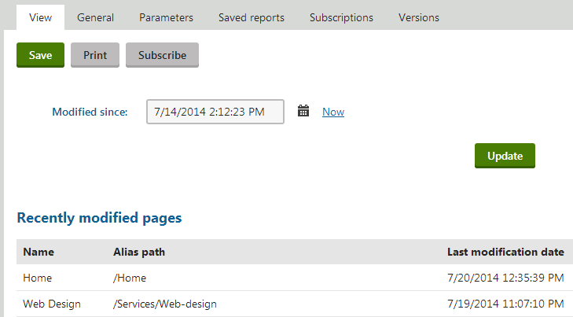
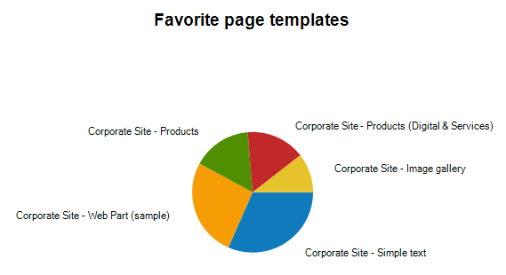
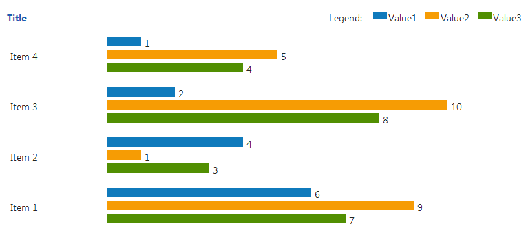

Creating reports
To watch the activity in the system and on websites, you need to create reports. Then you can add components to the report to display the collected data, such as graphs, tables and values.
Open the Reporting application.
Select a category in the tree.
Click New report.
Type in the Report display name.
Click Save.
The General tab of the report editing interface opens.
Define the Layout of the report using the WYSIWYG editor. To retrieve and display information from the Kentico database, add the following objects into the report's layout:
Additionally, macro expressions are supported in the report layout.
You can view the output of the report on the View tab.
Localizing strings in reports
If you need to create a single report in multiple languages, follow the instructions given in Working with resource strings.
Creating tables in reports
Tables allow you to retrieve data from the Kentico database using an SQL query.
In the Reporting application, edit a report on the General tab.
Click New in the Tables section below the layout editor.
Define the properties of the new table:
Click Save & Close.
Place the cursor in the layout editor where you want to put the table.
Select the defined table from the list in the Tables section.
Click Insert.
Tables are entered into the report layout editor as an expression in the following format: %%control:ReportTable?<report code name>.<table code name>%%.
Click Save.

Example of a report table
Writing queries for tables
The queries you write for tables are standard SQL queries that pull data from the Kentico database. For information about pages, you can use the View_CMS_Tree_Joined table that returns published versions of all pages.
Table column names
The table column names use the same names as the column names from the returned data set. If you need to use user friendly names, you can use the following syntax in the query:
SELECT PageTemplateDisplayName AS [Template Name], ...Creating graphs in reports
Graphs allow you to retrieve data from the Kentico database and display it in various types of visual formats.
In the Reporting application, edit a report on the General tab.
Click New in the Graphs section below the layout editor.
Define the properties of the new graph:
Report graph properties:
Click Save & Close.
Place the cursor in the layout editor where you want to put the graph.
Select the defined graph from the list in the Graphs section.
Click Insert.
Graphs are entered into the report layout editor as an expression in the following format: %%control:ReportGraph?<report code name>.<graph code name>%%.
Click Save.

Example of a report graph
Writing queries for pie charts
The queries for pie chart graphs must return two columns: the item categories and their values. The graph automatically calculates the displayed size of the given category.
Writing queries for bar graphs
The queries for bar chart graphs must return at least two columns: the item categories and their values. If you specify more than two columns, the additional columns will be displayed side-by-side (Bar charts), in front of each other (Bar charts with the Overlay setting enabled), on top of each other (Bar stacked charts) or they will divide one column by percentage (Bar stacked charts with the 100% stacked setting enabled).
Writing queries for line charts
The queries for line chart graphs must return at least two columns: the item categories and their values. If you specify more than two columns, the additional columns will be displayed as separate lines.
Creating HTML graphs in reports
In addition to the image-based graphs, data can be visually represented in HTML graphs. Graphs of this type are composed purely out of HTML code (table and DIV elements). As a result, they can be dynamically scaled according to the amount of data that needs to be displayed, unlike an image with a predefined size.
HTML graphs always use a horizontal bar layout, which can easily be extended to display any number of items. In most cases where scaling is not an issue, it is recommended to use standard graphs, since they offer more customization options and graphical flexibility.
Like other reporting tools, HTML graphs retrieve the data to be displayed using queries. The queries must return at least two columns: the first column is used for items and the others for their values. If more than two columns are specified, the values of these additional columns are displayed below each other as differently colored bars.

Example of an HTML graph
By default, data is displayed in descending order, i.e. with the newest items at the top of the graph. To create a HTML graph:
In the Reporting application, edit a report on the General tab.
Click New in the HTML graphs section below the layout editor.
Define the properties of the new HTML graph:
Click Save & Close.
Place the cursor in the layout editor where you want to put the HTML graph.
Select the defined HTML graph from the list in the HTML graphs section.
Click Insert.
HTML graphs are entered into the report layout editor as an expression in the following format: %%control:ReportHtmlGraph?<report code name>.<graph code name>%%.
Click Save.
HTML graphs on the live site
Because of the way they are constructed, HTML graphs are only displayed correctly in the administration interface. The necessary styles will not be applied on the live site.
Therefore, it is recommended to avoid publishing reports containing HTML graphs on your website (you can find more information about this process in Displaying reports on websites).
Creating values in reports
A value is an object that you can place into the layout of a report, which can be used to display a single scalar value returned by a query in a specified string format.
In the Reporting application, edit a report on the General tab.
Click New in the Values section below the layout editor.
Define the properties of the new value:
Click Save & Close.
Place the cursor in the layout editor where you want to put the value.
Select the defined value from the drop-down list in the Values section.
Click Insert.
Values are entered into the report layout editor as an expression in the following format: %%control:ReportValue?<report code name>.<value code name>%%.
Click Save.
Writing queries for scalar value
The queries for scalar values may return any number of columns and rows, but the only value that will be displayed is the value in the first column of the first row of the result set.
See Example - creating a simple report for an example on how to create a report with a table, graph and a value.